Chapter 11 Linear Regression
11.1 Learning Objectives
By the end of this chapter, you will be able to:
- Understand the concept and purpose of linear regression
- Build and interpret simple linear regression models
- Create multiple regression models with several predictors
- Evaluate model fit using R-squared, adjusted R-squared, and other metrics
- Check regression assumptions and diagnose problems
- Make predictions using regression models
- Interpret coefficients and statistical significance
- Use polynomial regression and interaction terms
- Leverage AI tools to enhance regression analysis
11.2 Introduction
Linear regression is one of the most fundamental and widely used statistical techniques in sport analytics. It allows us to:
- Predict outcomes: How many wins will a team have based on their budget?
- Understand relationships: Does attendance increase with team success?
- Quantify effects: How much does each additional point per game increase win probability?
- Test hypotheses: Is there a significant relationship between training and performance?
11.2.1 The Regression Equation
Simple linear regression follows this form:
\[Y = \beta_0 + \beta_1X + \epsilon\]
Where: - \(Y\) = Dependent variable (outcome we’re predicting) - \(X\) = Independent variable (predictor) - \(\beta_0\) = Intercept (Y when X = 0) - \(\beta_1\) = Slope (change in Y for one-unit increase in X) - \(\epsilon\) = Error term (residuals)
11.3 Simple Linear Regression
Let’s start with a simple example: predicting team wins based on points scored per game.
11.3.1 Creating Sample Data
library(ggplot2)
library(dplyr)
# Create sample team performance data
set.seed(2024)
teams <- data.frame(
team = paste0("Team ", LETTERS[1:30]),
points_per_game = round(rnorm(30, mean = 75, sd = 10), 1),
wins = round(rnorm(30, mean = 15, sd = 8)),
attendance = round(rnorm(30, mean = 5000, sd = 1500)),
payroll_millions = round(rnorm(30, mean = 25, sd = 10), 1),
three_point_pct = round(rnorm(30, mean = 35, sd = 5), 1),
turnovers_per_game = round(rnorm(30, mean = 14, sd = 3), 1)
)
# Create realistic relationship: more points = more wins
teams$wins <- round(5 + 0.25 * teams$points_per_game + rnorm(30, 0, 3))
teams$wins <- pmax(0, pmin(30, teams$wins)) # Keep wins between 0-30
# Preview data
head(teams)## team points_per_game wins attendance payroll_millions three_point_pct turnovers_per_game
## 1 Team A 84.8 28 7389 12.7 33.7 10.6
## 2 Team B 79.7 26 6290 19.8 33.4 13.9
## 3 Team C 73.9 25 5808 18.0 28.5 21.2
## 4 Team D 72.9 21 5263 31.9 34.0 17.7
## 5 Team E 86.6 26 7469 30.5 31.4 11.7
## 6 Team F 87.9 29 4807 4.3 35.1 5.111.3.2 Visualizing the Relationship
Before building a model, always visualize the relationship:
ggplot(teams, aes(x = points_per_game, y = wins)) +
geom_point(size = 3, color = "#003366", alpha = 0.7) +
geom_smooth(method = "lm", se = TRUE, color = "#CC0000", fill = "#FFB6C1") +
labs(
title = "Team Wins vs. Points Per Game",
subtitle = "Positive linear relationship visible",
x = "Points Per Game",
y = "Wins",
caption = "Sample data: 30 teams"
) +
theme_minimal(base_size = 12) +
theme(plot.title = element_text(face = "bold"))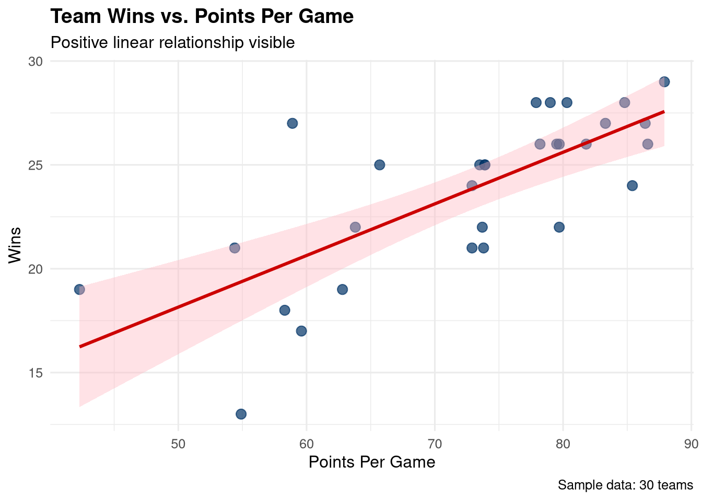
11.3.3 Building the Model
Use lm() (linear model) to create a regression:
# Build simple linear regression model
model1 <- lm(wins ~ points_per_game, data = teams)
# Display model summary
summary(model1)##
## Call:
## lm(formula = wins ~ points_per_game, data = teams)
##
## Residuals:
## Min 1Q Median 3Q Max
## -6.3693 -2.1713 0.4914 1.3711 6.6365
##
## Coefficients:
## Estimate Std. Error t value Pr(>|t|)
## (Intercept) 5.72383 3.20036 1.788 0.0845 .
## points_per_game 0.24855 0.04341 5.726 3.84e-06 ***
## ---
## Signif. codes: 0 '***' 0.001 '**' 0.01 '*' 0.05 '.' 0.1 ' ' 1
##
## Residual standard error: 2.673 on 28 degrees of freedom
## Multiple R-squared: 0.5393, Adjusted R-squared: 0.5229
## F-statistic: 32.78 on 1 and 28 DF, p-value: 3.84e-0611.3.4 Interpreting the Output
Let’s break down the key components:
## (Intercept) points_per_game
## 5.7238264 0.2485521# Interpretation:
# Intercept: Expected wins when points_per_game = 0 (not meaningful in this context)
# points_per_game: For each additional point per game, wins increase by this amount
# Extract R-squared
summary(model1)$r.squared## [1] 0.5393342## [1] 0.5228819Key Model Statistics:
Coefficients:
- Intercept (β₀): Baseline value when X = 0
- Slope (β₁): Change in Y for one-unit increase in X
Standard Error: Uncertainty in coefficient estimates
t-value: Coefficient divided by standard error
p-value: Probability of seeing this relationship by chance
- p < 0.05: Statistically significant
- p < 0.01: Highly significant
- p < 0.001: Very highly significant
R-squared: Proportion of variance explained (0 to 1)
- 0.7+: Strong relationship
- 0.4-0.7: Moderate relationship
- <0.4: Weak relationship
Adjusted R-squared: R² adjusted for number of predictors
11.3.5 Making Predictions
# Predict wins for teams scoring 70, 80, and 90 points per game
new_teams <- data.frame(
points_per_game = c(70, 80, 90)
)
predictions <- predict(model1, newdata = new_teams, interval = "confidence")
predictions## fit lwr upr
## 1 23.12247 22.09109 24.15386
## 2 25.60800 24.42385 26.79214
## 3 28.09352 26.27085 29.91619## points_per_game fit lwr upr
## 1 70 23.12247 22.09109 24.15386
## 2 80 25.60800 24.42385 26.79214
## 3 90 28.09352 26.27085 29.9161911.3.6 Visualizing the Regression Line
# Create predictions for smooth line
pred_data <- data.frame(
points_per_game = seq(min(teams$points_per_game),
max(teams$points_per_game),
length.out = 100)
)
pred_data$wins <- predict(model1, newdata = pred_data)
# Plot with custom regression line
ggplot(teams, aes(x = points_per_game, y = wins)) +
geom_point(size = 3, color = "#003366", alpha = 0.6) +
geom_line(data = pred_data, color = "#CC0000", size = 1.2) +
# Add equation as annotation
annotate("text", x = min(teams$points_per_game) + 5,
y = max(teams$wins) - 2,
label = paste0("Wins = ",
round(coef(model1)[1], 2), " + ",
round(coef(model1)[2], 2), " × PPG"),
hjust = 0, size = 4, fontface = "bold") +
labs(
title = "Linear Regression: Wins ~ Points Per Game",
x = "Points Per Game",
y = "Wins"
) +
theme_minimal()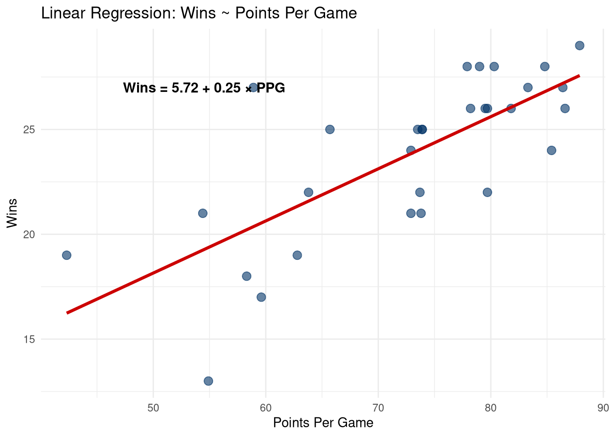
11.4 Multiple Regression
Multiple regression includes multiple predictor variables:
\[Y = \beta_0 + \beta_1X_1 + \beta_2X_2 + ... + \beta_nX_n + \epsilon\]
11.4.1 Building a Multiple Regression Model
# Build model with multiple predictors
model2 <- lm(wins ~ points_per_game + three_point_pct + turnovers_per_game,
data = teams)
summary(model2)##
## Call:
## lm(formula = wins ~ points_per_game + three_point_pct + turnovers_per_game,
## data = teams)
##
## Residuals:
## Min 1Q Median 3Q Max
## -5.7645 -1.9813 0.2818 1.5160 6.8084
##
## Coefficients:
## Estimate Std. Error t value Pr(>|t|)
## (Intercept) 7.91730 7.82741 1.011 0.321106
## points_per_game 0.23315 0.05219 4.467 0.000137 ***
## three_point_pct 0.02809 0.11825 0.238 0.814057
## turnovers_per_game -0.14049 0.16803 -0.836 0.410742
## ---
## Signif. codes: 0 '***' 0.001 '**' 0.01 '*' 0.05 '.' 0.1 ' ' 1
##
## Residual standard error: 2.728 on 26 degrees of freedom
## Multiple R-squared: 0.5544, Adjusted R-squared: 0.503
## F-statistic: 10.78 on 3 and 26 DF, p-value: 8.747e-0511.4.2 Comparing Models
# Compare simple vs. multiple regression
cat("Simple Regression R-squared:", round(summary(model1)$r.squared, 3), "\n")## Simple Regression R-squared: 0.539## Multiple Regression R-squared: 0.554## Multiple Regression Adj. R-squared: 0.503## Analysis of Variance Table
##
## Model 1: wins ~ points_per_game
## Model 2: wins ~ points_per_game + three_point_pct + turnovers_per_game
## Res.Df RSS Df Sum of Sq F Pr(>F)
## 1 28 200.01
## 2 26 193.47 2 6.5397 0.4394 0.649111.4.3 Interpreting Multiple Regression Coefficients
## Estimate Std. Error t value Pr(>|t|)
## (Intercept) 7.9172990 7.82740950 1.0114839 0.3211059470
## points_per_game 0.2331506 0.05219084 4.4672709 0.0001371408
## three_point_pct 0.0280949 0.11824664 0.2375958 0.8140569481
## turnovers_per_game -0.1404851 0.16803331 -0.8360549 0.4107420956# Interpretation:
# Each coefficient represents the change in Y when that predictor increases by 1,
# HOLDING ALL OTHER PREDICTORS CONSTANT
# Example interpretation:
cat("\nInterpretation:\n")##
## Interpretation:## - For each 1% increase in 3-point percentage,## wins increase by 0.028## (holding points per game and turnovers constant)11.5 Model Diagnostics
Always check model assumptions before trusting results!
11.5.1 Regression Assumptions
- Linearity: Relationship between X and Y is linear
- Independence: Observations are independent
- Homoscedasticity: Constant variance of residuals
- Normality: Residuals are normally distributed
- No multicollinearity: Predictors aren’t highly correlated
11.5.2 Diagnostic Plots
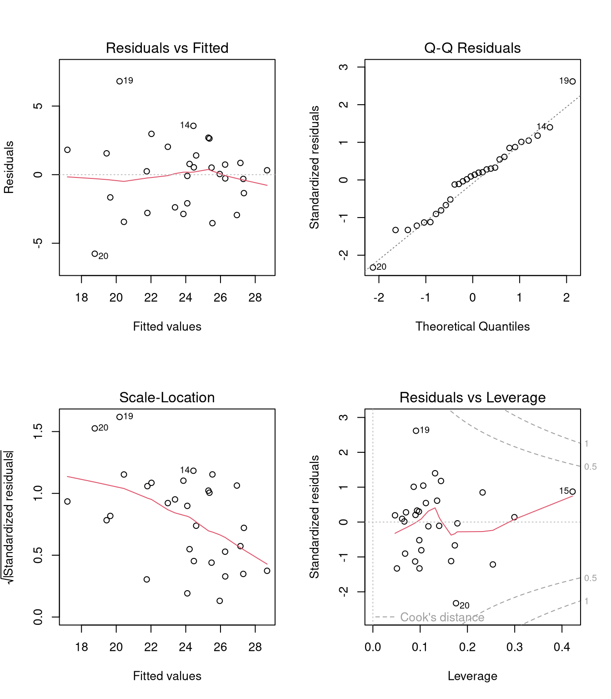
Interpreting Diagnostic Plots:
- Residuals vs. Fitted: Check for linearity and homoscedasticity
- Should show random scatter around horizontal line at 0
- No clear pattern = good
- Q-Q Plot: Check normality of residuals
- Points should fall along diagonal line
- Deviations at ends indicate non-normality
- Scale-Location: Check homoscedasticity
- Should show random scatter
- Horizontal line with equal spread = good
- Residuals vs. Leverage: Identify influential points
- Points outside Cook’s distance are influential
- Investigate any points beyond dashed lines
11.5.3 Residual Analysis
# Extract residuals
teams$residuals <- residuals(model2)
teams$fitted_values <- fitted(model2)
# Plot residuals vs. fitted values
ggplot(teams, aes(x = fitted_values, y = residuals)) +
geom_point(size = 3, alpha = 0.6, color = "#003366") +
geom_hline(yintercept = 0, linetype = "dashed", color = "red", size = 1) +
geom_smooth(se = FALSE, color = "#CC6600") +
labs(
title = "Residual Plot",
subtitle = "Check for patterns (none is good!)",
x = "Fitted Values",
y = "Residuals"
) +
theme_minimal()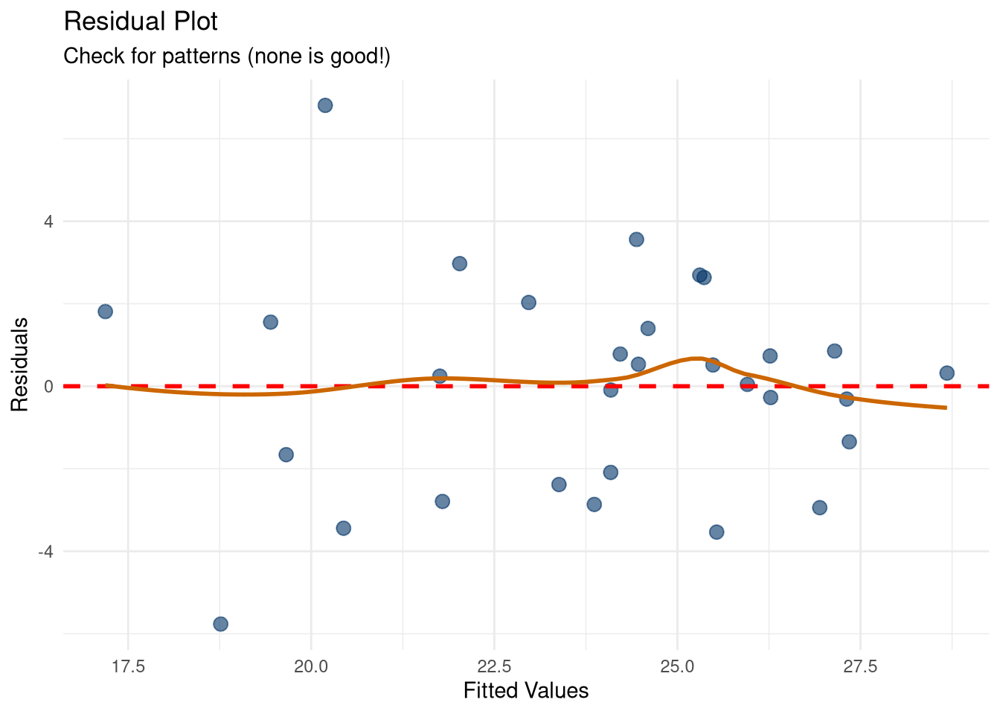
11.5.4 Checking Normality of Residuals
# Histogram of residuals
# Calculate scaling factor outside aes() to avoid namespace conflicts
residual_range <- max(teams$residuals) - min(teams$residuals)
bin_count <- 15
ggplot(teams, aes(x = residuals)) +
geom_histogram(bins = bin_count, fill = "#003366", color = "white", alpha = 0.7) +
geom_density(aes(y = after_stat(count) * residual_range / bin_count),
color = "#CC0000", size = 1.2) +
labs(
title = "Distribution of Residuals",
subtitle = "Should be approximately normal",
x = "Residuals",
y = "Frequency"
) +
theme_minimal()
##
## Shapiro-Wilk normality test
##
## data: residuals(model2)
## W = 0.97756, p-value = 0.757711.5.5 Checking for Multicollinearity
# Variance Inflation Factor (VIF)
# VIF > 10 indicates problematic multicollinearity
# VIF > 5 is concerning
# Install car package if needed
if (!require(car, quietly = TRUE)) {
cat("Note: 'car' package needed for VIF. Install with: install.packages('car')\n")
} else {
vif_values <- car::vif(model2)
print(vif_values)
# VIF interpretation
if (any(vif_values > 10)) {
cat("\nWARNING: High multicollinearity detected!\n")
} else if (any(vif_values > 5)) {
cat("\nCAUTION: Moderate multicollinearity present.\n")
} else {
cat("\nGood: No problematic multicollinearity.\n")
}
}## points_per_game three_point_pct turnovers_per_game
## 1.387512 1.127899 1.293555
##
## Good: No problematic multicollinearity.# Correlation matrix of predictors
cor_matrix <- cor(teams[, c("points_per_game", "three_point_pct", "turnovers_per_game")])
round(cor_matrix, 3)## points_per_game three_point_pct turnovers_per_game
## points_per_game 1.000 -0.268 -0.437
## three_point_pct -0.268 1.000 -0.066
## turnovers_per_game -0.437 -0.066 1.00011.6 Making Predictions
11.6.1 Point Predictions
# Create new data for prediction
new_data <- data.frame(
points_per_game = c(70, 75, 80, 85),
three_point_pct = c(32, 35, 38, 40),
turnovers_per_game = c(15, 14, 13, 12)
)
# Make predictions
predictions <- predict(model2, newdata = new_data, interval = "prediction")
# Combine with input
result <- cbind(new_data, predictions)
result## points_per_game three_point_pct turnovers_per_game fit lwr upr
## 1 70 32 15 23.02960 17.27088 28.78832
## 2 75 35 14 24.42013 18.71567 30.12458
## 3 80 38 13 25.81065 20.00115 31.62015
## 4 85 40 12 27.17308 21.17195 33.1742011.6.2 Prediction Intervals vs. Confidence Intervals
# Confidence interval: uncertainty about the MEAN response
conf_int <- predict(model2, newdata = new_data, interval = "confidence")
# Prediction interval: uncertainty about INDIVIDUAL predictions
pred_int <- predict(model2, newdata = new_data, interval = "prediction")
# Prediction intervals are WIDER because they account for individual variation
comparison <- data.frame(
scenario = 1:nrow(new_data),
conf_lower = conf_int[, "lwr"],
conf_upper = conf_int[, "upr"],
pred_lower = pred_int[, "lwr"],
pred_upper = pred_int[, "upr"],
fit = conf_int[, "fit"]
)
print(comparison)## scenario conf_lower conf_upper pred_lower pred_upper fit
## 1 1 21.71693 24.34228 17.27088 28.78832 23.02960
## 2 2 23.37081 25.46944 18.71567 30.12458 24.42013
## 3 3 24.29060 27.33069 20.00115 31.62015 25.81065
## 4 4 25.03443 29.31172 21.17195 33.17420 27.1730811.6.3 Visualizing Predictions
# Create sequence for one predictor, holding others at mean
pred_sequence <- data.frame(
points_per_game = seq(55, 95, length.out = 100),
three_point_pct = mean(teams$three_point_pct),
turnovers_per_game = mean(teams$turnovers_per_game)
)
# Get predictions with confidence intervals
pred_result <- predict(model2, newdata = pred_sequence, interval = "confidence")
pred_sequence <- cbind(pred_sequence, pred_result)
# Plot
ggplot(teams, aes(x = points_per_game, y = wins)) +
geom_point(size = 3, alpha = 0.6, color = "#003366") +
geom_line(data = pred_sequence, aes(y = fit),
color = "#CC0000", size = 1.2) +
geom_ribbon(data = pred_sequence, aes(y = fit, ymin = lwr, ymax = upr),
alpha = 0.2, fill = "#CC0000") +
labs(
title = "Predicted Wins vs. Points Per Game",
subtitle = "Holding 3PT% and turnovers at average values",
x = "Points Per Game",
y = "Wins",
caption = "Shaded area = 95% confidence interval"
) +
theme_minimal()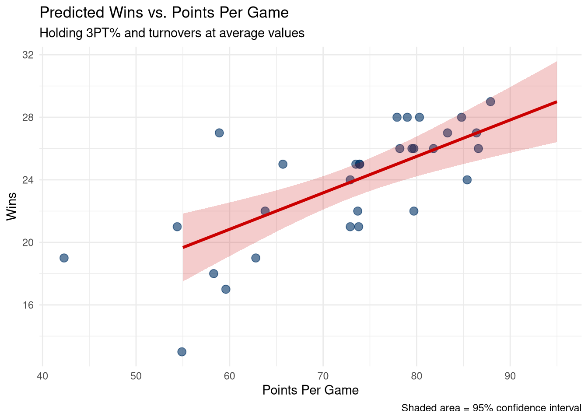
11.7 Polynomial Regression
Sometimes relationships are curved, not linear. Use polynomial terms:
# Create data with curved relationship
set.seed(456)
training_data <- data.frame(
hours_trained = seq(0, 40, length.out = 50),
performance = NA
)
# Performance increases then plateaus (diminishing returns)
training_data$performance <- 50 + 3 * training_data$hours_trained -
0.05 * training_data$hours_trained^2 +
rnorm(50, 0, 5)
# Linear model (wrong!)
linear_model <- lm(performance ~ hours_trained, data = training_data)
# Quadratic model (better!)
quadratic_model <- lm(performance ~ hours_trained + I(hours_trained^2),
data = training_data)
# Compare R-squared
cat("Linear R-squared:", round(summary(linear_model)$r.squared, 3), "\n")## Linear R-squared: 0.662## Quadratic R-squared: 0.866# Visualize both models
pred_data <- data.frame(
hours_trained = seq(0, 40, length.out = 100)
)
pred_data$linear <- predict(linear_model, newdata = pred_data)
pred_data$quadratic <- predict(quadratic_model, newdata = pred_data)
ggplot(training_data, aes(x = hours_trained, y = performance)) +
geom_point(size = 3, alpha = 0.6) +
geom_line(data = pred_data, aes(y = linear, color = "Linear"), size = 1) +
geom_line(data = pred_data, aes(y = quadratic, color = "Quadratic"), size = 1) +
scale_color_manual(values = c("Linear" = "#CC0000", "Quadratic" = "#003366")) +
labs(
title = "Polynomial Regression: Training Hours vs. Performance",
subtitle = "Quadratic model captures diminishing returns",
x = "Hours Trained Per Week",
y = "Performance Score",
color = "Model"
) +
theme_minimal() +
theme(legend.position = "top")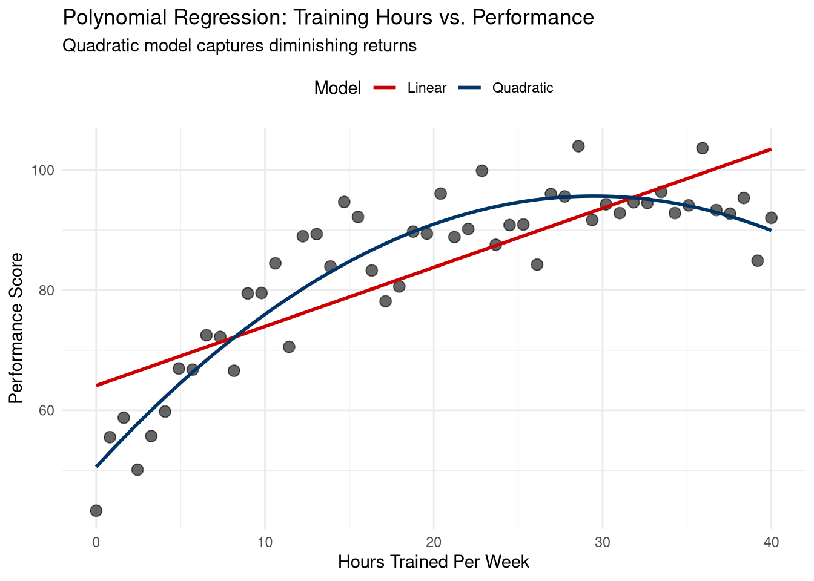
11.8 Interaction Effects
Interaction terms allow the effect of one variable to depend on another:
# Create data where effect of training depends on talent
set.seed(789)
athletes <- data.frame(
training_hours = rep(seq(5, 25, by = 5), each = 20),
talent_level = rep(seq(50, 90, length.out = 20), 5)
)
# Interaction: training is more effective for high-talent athletes
athletes$performance <- 20 +
1.5 * athletes$training_hours +
0.8 * athletes$talent_level +
0.03 * athletes$training_hours * athletes$talent_level +
rnorm(100, 0, 10)
# Model WITHOUT interaction
model_no_int <- lm(performance ~ training_hours + talent_level, data = athletes)
# Model WITH interaction
model_with_int <- lm(performance ~ training_hours * talent_level, data = athletes)
# Compare models
cat("Model without interaction R²:", round(summary(model_no_int)$r.squared, 3), "\n")## Model without interaction R²: 0.906## Model with interaction R²: 0.911##
## Call:
## lm(formula = performance ~ training_hours * talent_level, data = athletes)
##
## Residuals:
## Min 1Q Median 3Q Max
## -30.6452 -6.1594 -0.5095 7.4808 22.3091
##
## Coefficients:
## Estimate Std. Error t value Pr(>|t|)
## (Intercept) 12.86679 13.47135 0.955 0.3419
## training_hours 2.04752 0.81235 2.520 0.0134 *
## talent_level 0.85700 0.18962 4.520 1.77e-05 ***
## training_hours:talent_level 0.02481 0.01143 2.169 0.0325 *
## ---
## Signif. codes: 0 '***' 0.001 '**' 0.01 '*' 0.05 '.' 0.1 ' ' 1
##
## Residual standard error: 9.815 on 96 degrees of freedom
## Multiple R-squared: 0.9107, Adjusted R-squared: 0.9079
## F-statistic: 326.3 on 3 and 96 DF, p-value: < 2.2e-16# Visualize interaction
athletes$talent_group <- cut(athletes$talent_level,
breaks = 3,
labels = c("Low Talent", "Med Talent", "High Talent"))
ggplot(athletes, aes(x = training_hours, y = performance, color = talent_group)) +
geom_point(alpha = 0.5) +
geom_smooth(method = "lm", se = FALSE, size = 1.2) +
scale_color_manual(values = c("Low Talent" = "#CC0000",
"Med Talent" = "#CC6600",
"High Talent" = "#003366")) +
labs(
title = "Interaction Effect: Training × Talent",
subtitle = "Training is more effective for high-talent athletes",
x = "Training Hours Per Week",
y = "Performance Score",
color = "Talent Level"
) +
theme_minimal() +
theme(legend.position = "top")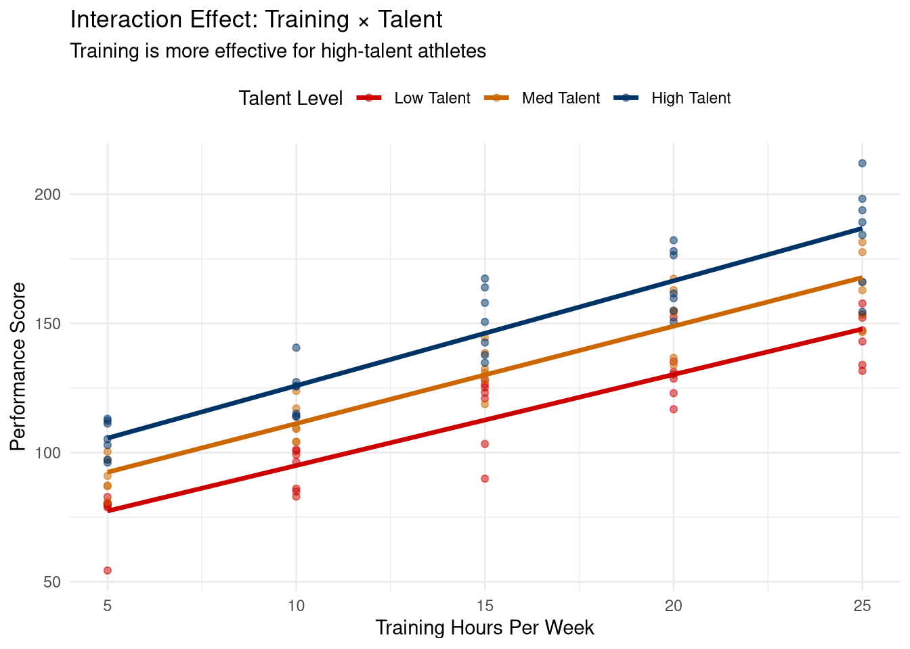
11.9 Model Selection and Comparison
11.9.1 Stepwise Regression
# Start with full model
full_model <- lm(wins ~ points_per_game + three_point_pct +
turnovers_per_game + payroll_millions + attendance,
data = teams)
# Backward stepwise selection (removes non-significant predictors)
step_model <- step(full_model, direction = "backward", trace = 0)
# Display final model
summary(step_model)##
## Call:
## lm(formula = wins ~ points_per_game, data = teams)
##
## Residuals:
## Min 1Q Median 3Q Max
## -6.3693 -2.1713 0.4914 1.3711 6.6365
##
## Coefficients:
## Estimate Std. Error t value Pr(>|t|)
## (Intercept) 5.72383 3.20036 1.788 0.0845 .
## points_per_game 0.24855 0.04341 5.726 3.84e-06 ***
## ---
## Signif. codes: 0 '***' 0.001 '**' 0.01 '*' 0.05 '.' 0.1 ' ' 1
##
## Residual standard error: 2.673 on 28 degrees of freedom
## Multiple R-squared: 0.5393, Adjusted R-squared: 0.5229
## F-statistic: 32.78 on 1 and 28 DF, p-value: 3.84e-06# Compare original vs. stepwise model
cat("\nFull model Adj. R²:", round(summary(full_model)$adj.r.squared, 3), "\n")##
## Full model Adj. R²: 0.48## Stepwise model Adj. R²: 0.52311.9.2 AIC and BIC for Model Comparison
# Compare multiple models using AIC (Akaike Information Criterion)
# Lower AIC = better model
models_list <- list(
"Model 1: Points only" = model1,
"Model 2: Points + 3PT% + Turnovers" = model2,
"Full model" = full_model,
"Stepwise model" = step_model
)
comparison <- data.frame(
Model = names(models_list),
AIC = sapply(models_list, AIC),
BIC = sapply(models_list, BIC),
Adj_R_squared = sapply(models_list, function(m) summary(m)$adj.r.squared),
Num_Predictors = sapply(models_list, function(m) length(coef(m)) - 1)
)
comparison <- comparison[order(comparison$AIC), ]
print(comparison)## Model AIC BIC Adj_R_squared
## Model 1: Points only Model 1: Points only 148.0508 152.2544 0.5228819
## Stepwise model Stepwise model 148.0508 152.2544 0.5228819
## Model 2: Points + 3PT% + Turnovers Model 2: Points + 3PT% + Turnovers 151.0534 158.0594 0.5029813
## Full model Full model 154.0031 163.8115 0.4800884
## Num_Predictors
## Model 1: Points only 1
## Stepwise model 1
## Model 2: Points + 3PT% + Turnovers 3
## Full model 511.10 Reporting Regression Results
11.10.1 Creating Professional Tables
# Create coefficient table
coef_summary <- summary(model2)$coefficients
# Format as data frame
result_table <- data.frame(
Predictor = rownames(coef_summary),
Estimate = round(coef_summary[, "Estimate"], 3),
SE = round(coef_summary[, "Std. Error"], 3),
t_value = round(coef_summary[, "t value"], 2),
p_value = round(coef_summary[, "Pr(>|t|)"], 4)
)
# Add significance stars
result_table$Significance <- ifelse(result_table$p_value < 0.001, "***",
ifelse(result_table$p_value < 0.01, "**",
ifelse(result_table$p_value < 0.05, "*", "")))
print(result_table)## Predictor Estimate SE t_value p_value Significance
## (Intercept) (Intercept) 7.917 7.827 1.01 0.3211
## points_per_game points_per_game 0.233 0.052 4.47 0.0001 ***
## three_point_pct three_point_pct 0.028 0.118 0.24 0.8141
## turnovers_per_game turnovers_per_game -0.140 0.168 -0.84 0.4107##
## --- Model Fit Statistics ---## R-squared: 0.554## Adjusted R-squared: 0.503## F-statistic: 10.78cat("p-value:", format.pval(pf(summary(model2)$fstatistic[1],
summary(model2)$fstatistic[2],
summary(model2)$fstatistic[3],
lower.tail = FALSE)), "\n")## p-value: 9e-05## Residual standard error: 2.728## N = 3011.10.2 Visualizing Coefficient Estimates
# Create coefficient plot with confidence intervals
coef_df <- data.frame(
term = names(coef(model2))[-1], # Exclude intercept
estimate = coef(model2)[-1],
conf_low = confint(model2)[-1, 1],
conf_high = confint(model2)[-1, 2]
)
ggplot(coef_df, aes(x = estimate, y = term)) +
geom_vline(xintercept = 0, linetype = "dashed", color = "red", size = 1) +
geom_point(size = 4, color = "#003366") +
geom_errorbarh(aes(xmin = conf_low, xmax = conf_high),
height = 0.2, color = "#003366", size = 1) +
labs(
title = "Regression Coefficients with 95% Confidence Intervals",
subtitle = "Intervals crossing zero are not statistically significant",
x = "Coefficient Estimate",
y = NULL
) +
theme_minimal() +
theme(plot.title = element_text(face = "bold"))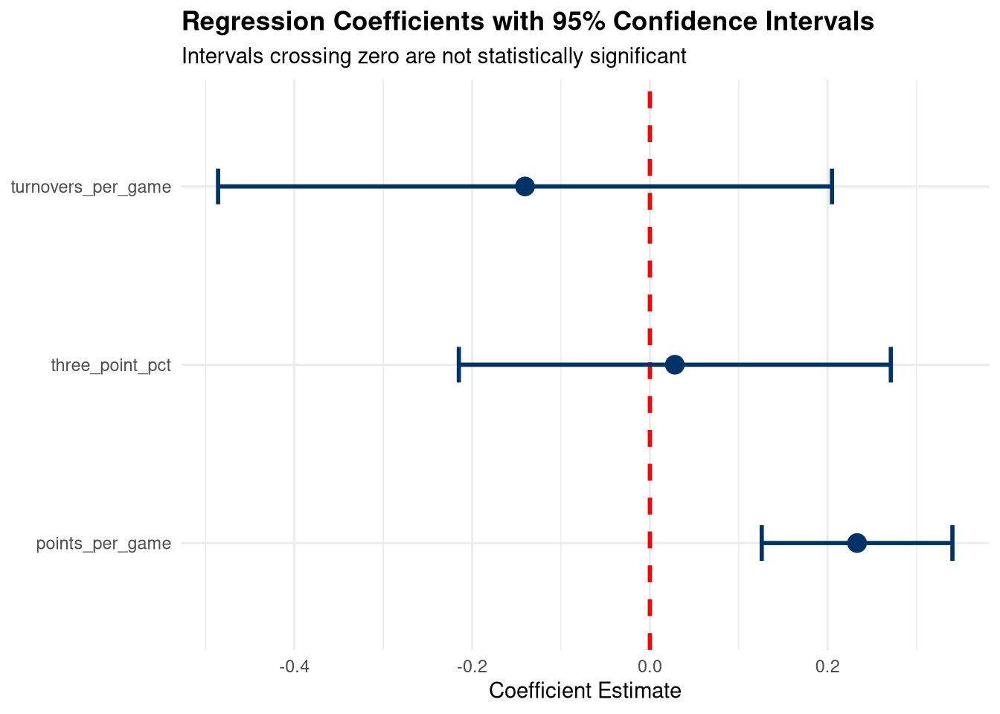
11.11 Common Pitfalls and Solutions
11.11.1 Problem 1: Overfitting
# Create small dataset
set.seed(999)
small_data <- teams[1:10, ]
# Overfit model with too many predictors
overfit_model <- lm(wins ~ points_per_game + three_point_pct +
turnovers_per_game + payroll_millions + attendance,
data = small_data)
cat("R-squared:", round(summary(overfit_model)$r.squared, 3), "\n")## R-squared: 0.913## Adjusted R-squared: 0.805## Note: Large gap between R² and Adj. R² suggests overfitting!# Rule of thumb: Need at least 10-20 observations per predictor
cat("\nObservations:", nrow(small_data), "\n")##
## Observations: 10## Predictors: 5cat("Ratio:", round(nrow(small_data) / (length(coef(overfit_model)) - 1), 1),
"observations per predictor\n")## Ratio: 2 observations per predictor11.11.2 Problem 2: Extrapolation
## [1] 42.3 87.9# Dangerous: Predicting at 120 PPG (way outside observed range)
risky_prediction <- predict(model1,
newdata = data.frame(points_per_game = 120))
cat("Prediction at 120 PPG:", round(risky_prediction, 1), "wins\n")## Prediction at 120 PPG: 35.6 wins## WARNING: This is extrapolation and likely unreliable!# Visualize the danger
extrapolation_data <- data.frame(
points_per_game = seq(50, 120, length.out = 100)
)
extrapolation_data$wins <- predict(model1, newdata = extrapolation_data)
extrapolation_data$region <- ifelse(
extrapolation_data$points_per_game >= min(teams$points_per_game) &
extrapolation_data$points_per_game <= max(teams$points_per_game),
"Interpolation (Safe)", "Extrapolation (Risky)"
)
ggplot() +
geom_line(data = extrapolation_data,
aes(x = points_per_game, y = wins, color = region, linetype = region),
size = 1.2) +
geom_point(data = teams, aes(x = points_per_game, y = wins),
size = 3, alpha = 0.6) +
scale_color_manual(values = c("Interpolation (Safe)" = "#003366",
"Extrapolation (Risky)" = "#CC0000")) +
scale_linetype_manual(values = c("Interpolation (Safe)" = "solid",
"Extrapolation (Risky)" = "dashed")) +
labs(
title = "Danger of Extrapolation",
subtitle = "Only trust predictions within the observed data range",
x = "Points Per Game",
y = "Predicted Wins",
color = NULL,
linetype = NULL
) +
theme_minimal() +
theme(legend.position = "top")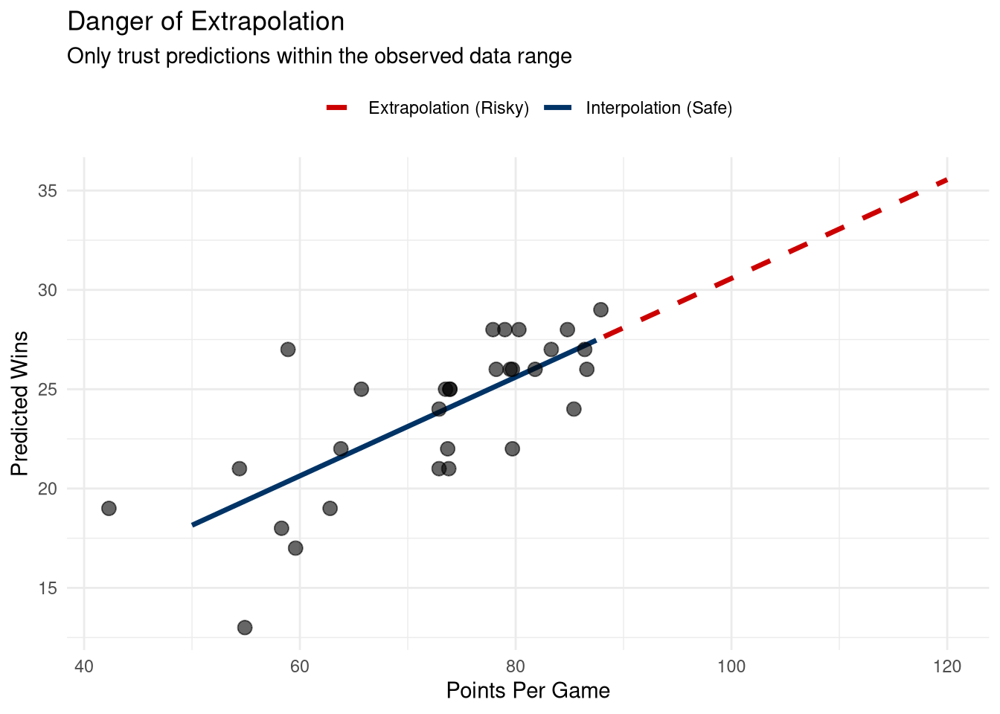
11.12 AI-Enhanced Regression Analysis
11.12.1 Using AI for Model Building
# Example prompts for ChatGPT/Claude:
# 1. Exploratory prompt
"I have data on team wins, points per game, 3-point percentage, and turnovers.
Which variables should I include in my regression model? What relationships
should I check for?"
# 2. Interpretation help
"I ran a regression with R² = 0.68, adjusted R² = 0.64, and the coefficient
for points_per_game is 0.25 (p < 0.001). Explain what this means in plain English
for a sports manager."
# 3. Diagnostic help
"My residual vs. fitted plot shows a curved pattern. What does this mean
and how should I fix it?"
# 4. Code assistance
"Write R code to create a multiple regression predicting attendance based on
wins, ticket price, and day of week (as a factor variable)."11.12.2 AI Workflow for Regression
Step 1: Data Exploration - Use AI to suggest which variables might be related - Ask for visualization ideas
Step 2: Model Building - Get help with formula syntax - Ask about interaction terms to consider
Step 3: Diagnostics - Upload diagnostic plots and ask for interpretation - Get suggestions for fixing violations
Step 4: Interpretation - Convert statistical output to business insights - Draft executive summary of findings
11.13 Chapter Summary
In this chapter, you learned:
- Simple Linear Regression: One predictor, one outcome
- Multiple Regression: Multiple predictors simultaneously
- Model Diagnostics: Checking assumptions with plots and tests
- Making Predictions: Point estimates and intervals
- Polynomial Regression: Capturing curved relationships
- Interactions: When effects depend on other variables
- Model Selection: Comparing and choosing best models
- Common Pitfalls: Overfitting and extrapolation
- AI Integration: Using AI to enhance regression analysis
11.14 Exercises
11.14.1 Exercise 1: Simple Linear Regression
Task: Using the teams dataset, build a simple linear regression predicting attendance based on wins.
Requirements: - Create a scatterplot with regression line - Build the model and interpret the output - Report the R-squared and p-value - Predict attendance for a team with 20 wins - Write one sentence interpreting the slope coefficient
11.14.2 Exercise 2: Multiple Regression
Task: Build a multiple regression predicting attendance using wins, points_per_game, and payroll_millions.
Requirements: - Build the model - Report which predictors are statistically significant (p < 0.05) - Compare the R-squared to Exercise 1 - Interpret one of the coefficients
11.14.3 Exercise 3: Model Diagnostics
Task: For the model from Exercise 2, check all regression assumptions.
Requirements: - Create the 4 diagnostic plots - Create a histogram of residuals - Run Shapiro-Wilk test for normality - Check VIF for multicollinearity - State whether assumptions are met
11.14.4 Exercise 4: Polynomial Regression
Task: Create sample data where performance increases with experience but eventually plateaus (use a quadratic relationship). Compare linear vs. quadratic models.
Requirements: - Create 50 observations with curved relationship - Fit both linear and quadratic models - Compare R-squared values - Visualize both fits on same plot - Explain which model is better and why
11.14.5 Exercise 5: Interaction Effects
Task: Build a model predicting wins from points_per_game and three_point_pct, including their interaction.
Requirements: - Build model with interaction term - Test if interaction is significant (p < 0.05) - Create a visualization showing the interaction - Interpret what the interaction means in plain English
11.15 Exercise Solutions
11.15.1 Solution 1: Simple Linear Regression
# Scatterplot with regression line
ggplot(teams, aes(x = wins, y = attendance)) +
geom_point(size = 3, color = "#003366", alpha = 0.7) +
geom_smooth(method = "lm", se = TRUE, color = "#CC0000") +
labs(
title = "Team Attendance vs. Wins",
x = "Wins",
y = "Attendance"
) +
theme_minimal()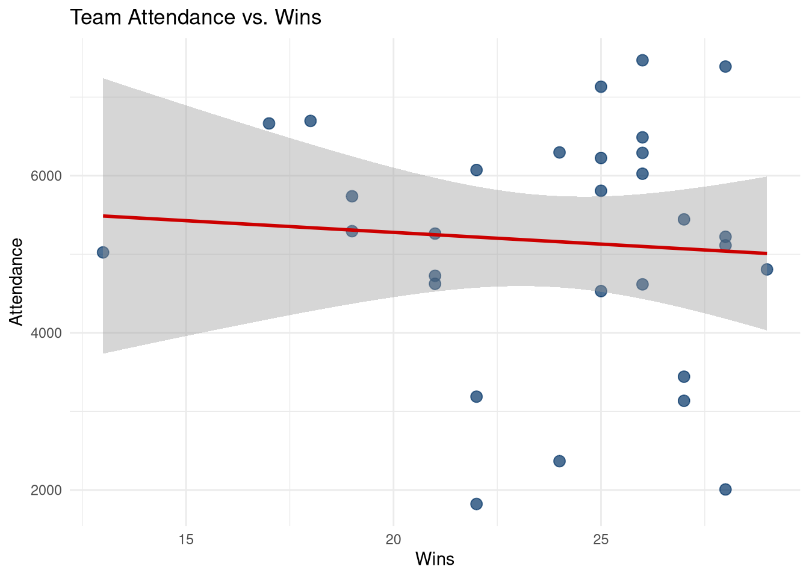
# Build model
attendance_model <- lm(attendance ~ wins, data = teams)
# Display summary
summary(attendance_model)##
## Call:
## lm(formula = attendance ~ wins, data = teams)
##
## Residuals:
## Min 1Q Median 3Q Max
## -3396.7 -579.3 128.2 1126.6 2369.6
##
## Coefficients:
## Estimate Std. Error t value Pr(>|t|)
## (Intercept) 5874.58 1798.15 3.267 0.00287 **
## wins -29.81 74.50 -0.400 0.69208
## ---
## Signif. codes: 0 '***' 0.001 '**' 0.01 '*' 0.05 '.' 0.1 ' ' 1
##
## Residual standard error: 1552 on 28 degrees of freedom
## Multiple R-squared: 0.005686, Adjusted R-squared: -0.02982
## F-statistic: 0.1601 on 1 and 28 DF, p-value: 0.6921# Extract key statistics
r_squared <- summary(attendance_model)$r.squared
p_value <- summary(attendance_model)$coefficients["wins", "Pr(>|t|)"]
slope <- coef(attendance_model)["wins"]
cat("\n--- Key Results ---\n")##
## --- Key Results ---## R-squared: 0.006## p-value: 0.69208## Slope: -29.81# Prediction for 20 wins
pred_20 <- predict(attendance_model, newdata = data.frame(wins = 20))
cat("\nPredicted attendance for 20 wins:", round(pred_20), "fans\n")##
## Predicted attendance for 20 wins: 5278 fans# Interpretation
cat("\nInterpretation: For each additional win, attendance increases by approximately",
round(slope), "fans.\n")##
## Interpretation: For each additional win, attendance increases by approximately -30 fans.11.15.2 Solution 2: Multiple Regression
# Build multiple regression model
attendance_multi <- lm(attendance ~ wins + points_per_game + payroll_millions,
data = teams)
# Display summary
summary(attendance_multi)##
## Call:
## lm(formula = attendance ~ wins + points_per_game + payroll_millions,
## data = teams)
##
## Residuals:
## Min 1Q Median 3Q Max
## -3275.8 -615.2 260.7 1046.9 2289.0
##
## Coefficients:
## Estimate Std. Error t value Pr(>|t|)
## (Intercept) 5190.909 2130.134 2.437 0.022 *
## wins -92.833 113.467 -0.818 0.421
## points_per_game 29.237 38.332 0.763 0.452
## payroll_millions 2.298 27.518 0.084 0.934
## ---
## Signif. codes: 0 '***' 0.001 '**' 0.01 '*' 0.05 '.' 0.1 ' ' 1
##
## Residual standard error: 1592 on 26 degrees of freedom
## Multiple R-squared: 0.02846, Adjusted R-squared: -0.08364
## F-statistic: 0.2539 on 3 and 26 DF, p-value: 0.8578# Extract coefficient table
coef_table <- summary(attendance_multi)$coefficients
# Identify significant predictors (p < 0.05)
significant <- coef_table[coef_table[, "Pr(>|t|)"] < 0.05, ]
cat("\n--- Significant Predictors (p < 0.05) ---\n")##
## --- Significant Predictors (p < 0.05) ---## NULL##
## --- Model Comparison ---## Simple regression R²: 0.006## Multiple regression R²: 0.028## Multiple regression Adj. R²: -0.084# Interpret wins coefficient
wins_coef <- coef(attendance_multi)["wins"]
cat("\n--- Interpretation ---\n")##
## --- Interpretation ---## Coefficient for 'wins': -92.83## Interpretation: Holding points per game and payroll constant,## each additional win is associated with 93 change in attendance.11.15.3 Solution 3: Model Diagnostics
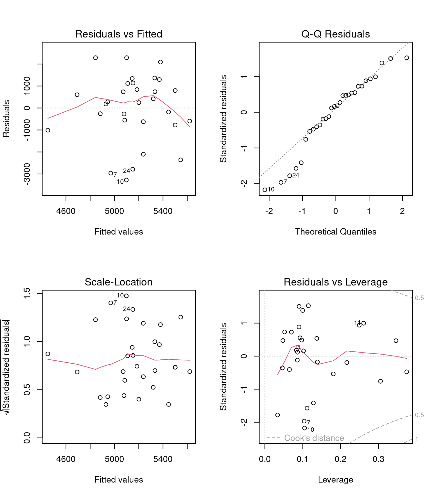
par(mfrow = c(1, 1))
# Histogram of residuals
residuals_df <- data.frame(residuals = residuals(attendance_multi))
ggplot(residuals_df, aes(x = residuals)) +
geom_histogram(bins = 15, fill = "#003366", color = "white", alpha = 0.7) +
labs(
title = "Distribution of Residuals",
x = "Residuals",
y = "Frequency"
) +
theme_minimal()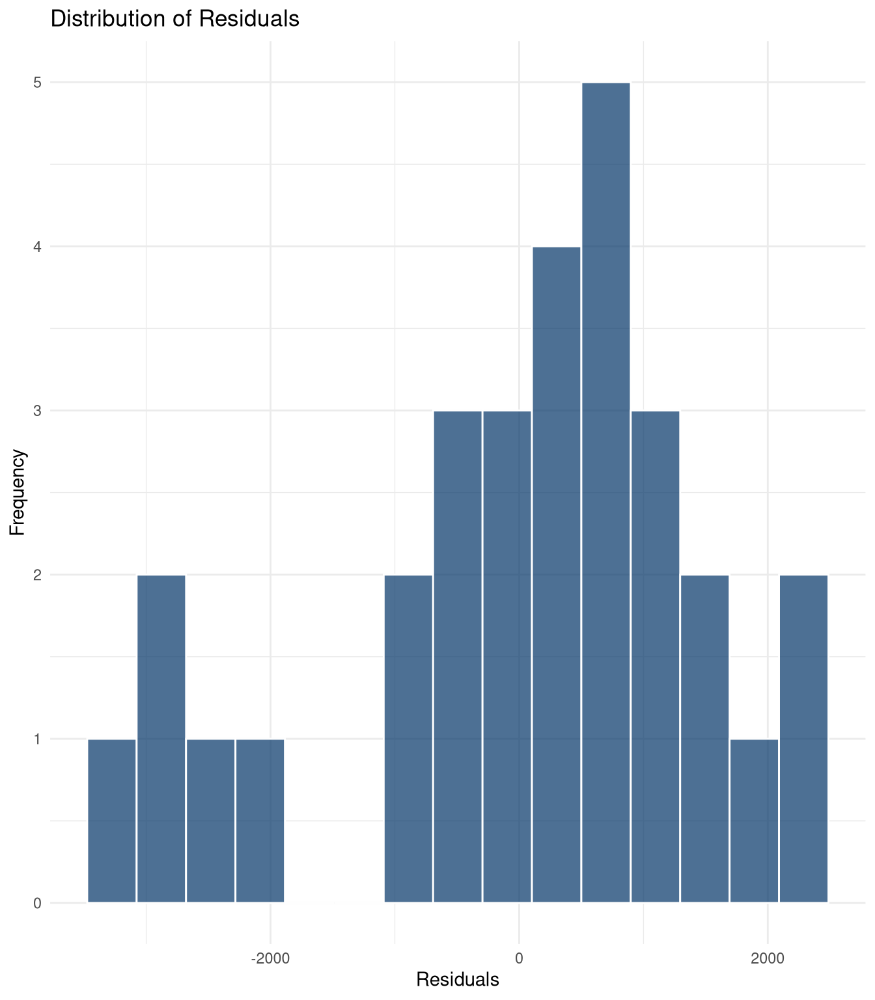
# Shapiro-Wilk test
shapiro_result <- shapiro.test(residuals(attendance_multi))
cat("\n--- Normality Test ---\n")##
## --- Normality Test ---## Shapiro-Wilk p-value: 0.0823if (shapiro_result$p.value > 0.05) {
cat("Result: Residuals appear normally distributed (p > 0.05)\n")
} else {
cat("Result: Residuals may not be normally distributed (p < 0.05)\n")
}## Result: Residuals appear normally distributed (p > 0.05)# VIF for multicollinearity
if (require(car, quietly = TRUE)) {
vif_values <- car::vif(attendance_multi)
cat("\n--- Multicollinearity Check ---\n")
print(vif_values)
if (any(vif_values > 10)) {
cat("WARNING: High multicollinearity detected (VIF > 10)\n")
} else if (any(vif_values > 5)) {
cat("CAUTION: Moderate multicollinearity (VIF > 5)\n")
} else {
cat("Good: No problematic multicollinearity (all VIF < 5)\n")
}
}##
## --- Multicollinearity Check ---
## wins points_per_game payroll_millions
## 2.204248 2.196150 1.016044
## Good: No problematic multicollinearity (all VIF < 5)##
## --- Assumptions Assessment ---## 1. Linearity: Check Residuals vs Fitted plot## 2. Independence: Assumed (no time series or clustering)## 3. Homoscedasticity: Check Scale-Location plot## 4. Normality: p = 0.0823## 5. Multicollinearity: Check VIF values above11.15.4 Solution 4: Polynomial Regression
# Create data with curved relationship
set.seed(2024)
experience_data <- data.frame(
years_experience = seq(0, 20, length.out = 50)
)
# Quadratic relationship: performance increases then plateaus
experience_data$performance <- 40 +
5 * experience_data$years_experience -
0.12 * experience_data$years_experience^2 +
rnorm(50, 0, 5)
# Linear model
linear_exp <- lm(performance ~ years_experience, data = experience_data)
# Quadratic model
quadratic_exp <- lm(performance ~ years_experience + I(years_experience^2),
data = experience_data)
# Compare R-squared
cat("--- Model Comparison ---\n")## --- Model Comparison ---## Linear R²: 0.904## Quadratic R²: 0.916cat("Improvement:", round(summary(quadratic_exp)$r.squared -
summary(linear_exp)$r.squared, 3), "\n")## Improvement: 0.012# Create predictions for visualization
pred_grid <- data.frame(
years_experience = seq(0, 20, length.out = 100)
)
pred_grid$linear <- predict(linear_exp, newdata = pred_grid)
pred_grid$quadratic <- predict(quadratic_exp, newdata = pred_grid)
# Visualize both models
ggplot(experience_data, aes(x = years_experience, y = performance)) +
geom_point(size = 3, alpha = 0.6, color = "black") +
geom_line(data = pred_grid, aes(y = linear, color = "Linear"),
size = 1.2) +
geom_line(data = pred_grid, aes(y = quadratic, color = "Quadratic"),
size = 1.2) +
scale_color_manual(values = c("Linear" = "#CC0000", "Quadratic" = "#003366")) +
labs(
title = "Linear vs. Quadratic Model",
subtitle = "Quadratic captures diminishing returns from experience",
x = "Years of Experience",
y = "Performance Score",
color = "Model"
) +
theme_minimal() +
theme(legend.position = "top")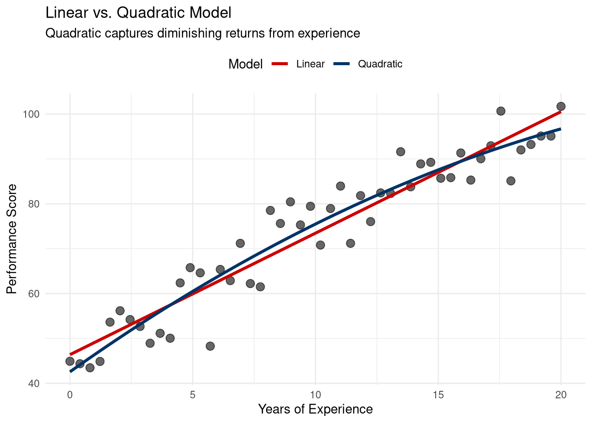
##
## --- Conclusion ---## The quadratic model is better because:cat("1. Higher R² (", round(summary(quadratic_exp)$r.squared, 3),
"vs", round(summary(linear_exp)$r.squared, 3), ")\n")## 1. Higher R² ( 0.916 vs 0.904 )## 2. Captures the curved relationship (diminishing returns)## 3. Linear model misses the plateau effect at high experience11.15.5 Solution 5: Interaction Effects
# Build model with interaction
interaction_model <- lm(wins ~ points_per_game * three_point_pct, data = teams)
# Display summary
summary(interaction_model)##
## Call:
## lm(formula = wins ~ points_per_game * three_point_pct, data = teams)
##
## Residuals:
## Min 1Q Median 3Q Max
## -5.3845 -1.7765 0.3137 1.1622 6.8480
##
## Coefficients:
## Estimate Std. Error t value Pr(>|t|)
## (Intercept) -29.102514 25.867313 -1.125 0.2708
## points_per_game 0.716584 0.359224 1.995 0.0566 .
## three_point_pct 0.937931 0.693837 1.352 0.1881
## points_per_game:three_point_pct -0.012655 0.009745 -1.299 0.2055
## ---
## Signif. codes: 0 '***' 0.001 '**' 0.01 '*' 0.05 '.' 0.1 ' ' 1
##
## Residual standard error: 2.679 on 26 degrees of freedom
## Multiple R-squared: 0.5703, Adjusted R-squared: 0.5207
## F-statistic: 11.5 on 3 and 26 DF, p-value: 5.524e-05# Extract interaction term p-value
interaction_pvalue <- summary(interaction_model)$coefficients[
"points_per_game:three_point_pct", "Pr(>|t|)"]
cat("\n--- Interaction Significance ---\n")##
## --- Interaction Significance ---## Interaction p-value: 0.2055if (interaction_pvalue < 0.05) {
cat("Result: Interaction IS statistically significant (p < 0.05)\n")
} else {
cat("Result: Interaction is NOT statistically significant (p >= 0.05)\n")
}## Result: Interaction is NOT statistically significant (p >= 0.05)# Create visualization
# Categorize 3PT% for visualization
teams$three_pt_category <- cut(teams$three_point_pct,
breaks = 3,
labels = c("Low 3PT%", "Med 3PT%", "High 3PT%"))
ggplot(teams, aes(x = points_per_game, y = wins, color = three_pt_category)) +
geom_point(size = 3, alpha = 0.6) +
geom_smooth(method = "lm", se = FALSE, size = 1.2) +
scale_color_manual(values = c("Low 3PT%" = "#CC0000",
"Med 3PT%" = "#CC6600",
"High 3PT%" = "#003366")) +
labs(
title = "Interaction: Points Per Game × 3-Point Percentage",
subtitle = "Does the relationship between PPG and wins depend on 3PT%?",
x = "Points Per Game",
y = "Wins",
color = "3-Point %"
) +
theme_minimal() +
theme(legend.position = "top")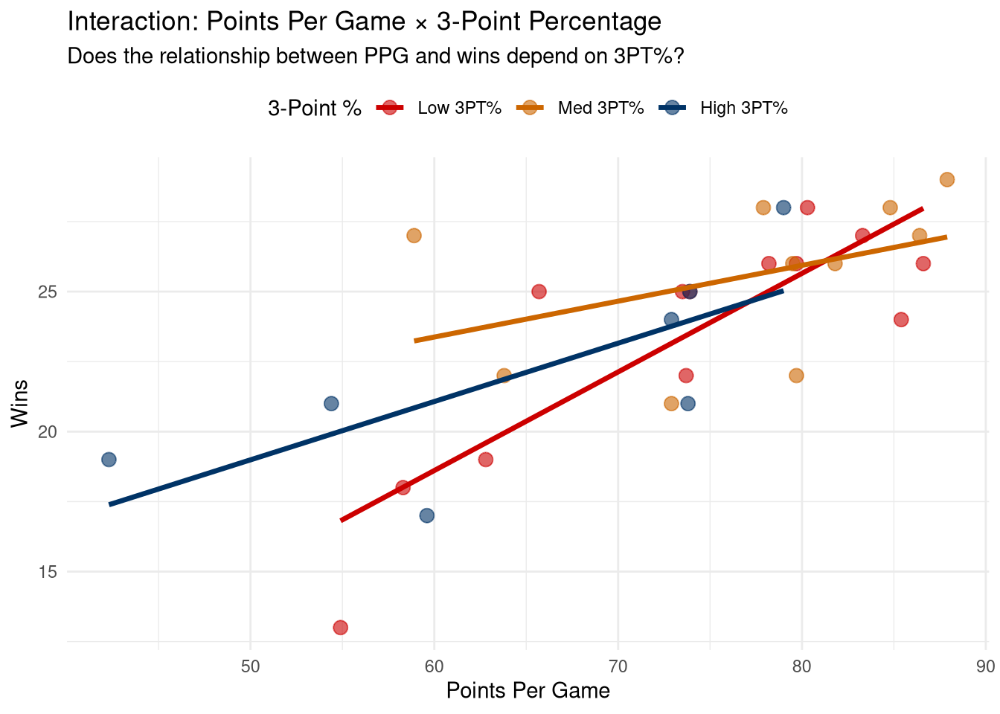
##
## --- Interpretation ---if (interaction_pvalue < 0.05) {
cat("The interaction term is significant, meaning:\n")
cat("The effect of points per game on wins DEPENDS ON the team's 3-point percentage.\n")
cat("In other words, scoring more points may have different impacts on winning\n")
cat("depending on whether the team shoots well from 3-point range.\n")
} else {
cat("The interaction term is not significant, meaning:\n")
cat("The effect of points per game on wins is CONSISTENT regardless of 3-point percentage.\n")
cat("Both variables contribute independently to wins.\n")
}## The interaction term is not significant, meaning:
## The effect of points per game on wins is CONSISTENT regardless of 3-point percentage.
## Both variables contribute independently to wins.11.16 AI Integration Checkpoint
Before moving to the next chapter, reflect on your regression analysis:
- What was the most challenging aspect of regression modeling?
- How did you use AI to help with interpretation?
- What diagnostic issues did you encounter and fix?
- How will you apply regression in sport analytics?
Document your workflow for future reference.
Next Chapter: We’ll explore clustering techniques to identify groups and patterns in sport data, building on your statistical foundation to discover hidden structures in player and team performance.